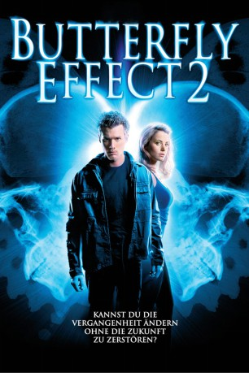

#11409 Butterfly Effect 2
Alternativ: The Butterfly Effect 2 (Englischer Titel)
 
 IMDB-Wertung: 4.5 / 10
IMDB-Wertung: 4.5 / 10  Tomatometer: 27
Tomatometer: 27  Metascore: 0
Metascore: 0 
Während Nick mit Freundin Julie und Freunden am See weilt, greift daheim der Rivale nach der Macht im Büro. Auf der Rückfahrt passiert die Katastrophe: Ein Truck rammt Nicks Auto, schwangere Geliebte und Freunde verlieren ihr Leben. Aus dem Krankenhaus entlassen, entdeckt Nick sein Talent, in die Vergangenheit zu reisen. Kurzerhand vereitelt er den Unfall, und alles wird gut. Jetzt will er auch noch die Karriere in der Vergangenheit forcieren. Doch nicht alle Folgen für die Gegenwart sind gewollt.
Jahr: 2006
Dauer: 92 Minuten
FSK: 16
Land: USA Studio: New Line Home VideoTonspuren: DD5.1 - ,
Untertitel:
Auflösung: 1080p (1920x1080) Größe: 5539 MB
Genre: Thriller, Drama, Sci-Fi
Regisseur: John R. Leonetti
Drehbuch: John Frankenheimer, Michael D. Weiss
Soundtrack: Michael Suby
Darsteller:
Datei: X:\3-Trilogie(A-F)\Butterfly Effect\Butterfly Effect 2 (2006, FSK16, 1920x1080).mkv seit 29.06.2019
Festplatte: HD Collection-2(A-Z)-3(A-M)
 Alle Filme aus Gruppe '3-Trilogie(A-F)\Butterfly Effect'
Alle Filme aus Gruppe '3-Trilogie(A-F)\Butterfly Effect'